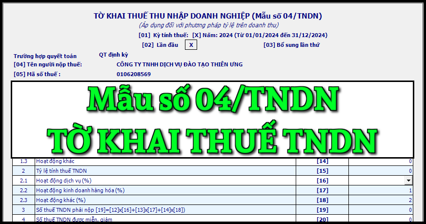

Mẫu Tờ khai thuế thu nhập doanh nghiệp áp dụng đối với phương pháp tỷ lệ trên doanh thu mới nhất năm 2024 là mẫu số: 04/TNDN được ban hành kèm theo Thông tư số 80/2021/TT-BTC
|
CỘNG HOÀ XÃ HỘI CHỦ NGHĨA VIỆT NAM
Độc lập - Tự do - Hạnh phúc TỜ KHAI THUẾ THU NHẬP DOANH NGHIỆP (Áp dụng đối với phương pháp tỷ lệ trên doanh thu) [01] Kỳ tính thuế: Năm……/Lần phát sinh ngày 15 tháng 09 năm 2026 [02] Lần đầu [03] Bổ sung lần thứ:…
[04] Tên người nộp thuế: ...........................................................................
[05] Mã số thuế: [06] Tên đại lý thuế (nếu có):...................................................................... [07] Mã số thuế: [08] Hợp đồng đại lý thuế: Số................................ngày...............................
Đơn vị tiền: Đồng Việt Nam
Tôi cam đoan số liệu khai trên là đúng và chịu trách nhiệm trước pháp luật về những số liệu đã khai./.
|
Cách kê khai tờ khai thuế thu nhập doanh nghiệp - mẫu số 04/TNDN theo TT 80/2021 như sau:
I. Đối tượng áp dụng
- Người nộp thuế thu nhập doanh nghiệp tính thuế theo phương pháp tỷ lệ % trên doanh thu bán hàng hóa dịch vụ theo quy định của pháp luật về thuế thu nhập doanh nghiệp lập hồ sơ khai thuế và gửi đến cơ quan thuế quản lý trực tiếp.
- Người nộp thuế thu nhập doanh nghiệp tính thuế theo phương pháp tỷ lệ % trên doanh thu bán hàng hóa dịch vụ theo quy định của pháp luật về thuế thu nhập doanh nghiệp thực hiện tạm nộp thuế theo quý chậm nhất là ngày 30 của tháng đầu quý sau và khai quyết toán thuế thu nhập doanh nghiệp năm chậm nhất là ngày cuối cùng của tháng thứ 3 kể từ ngày kết thúc năm dương lịch hoặc năm tài chính đối với trường hợp khai quyết toán thuế thu nhập doanh nghiệp năm; chậm nhất là ngày thứ 45 (bốn mươi lăm), kể từ ngày có quyết định giải thể, phá sản, chấm dứt hoạt động hoặc tổ chức lại doanh nghiệp. Trường hợp chuyển đổi loại hình doanh nghiệp (không bao gồm doanh nghiệp nhà nước cổ phần hóa) mà doanh nghiệp chuyển đổi kế thừa toàn bộ nghĩa vụ về thuế của doanh nghiệp được chuyển đổi thì không phải khai quyết toán thuế đến thời điểm có quyết định về việc chuyển đổi doanh nghiệp, doanh nghiệp khai quyết toán khi kết thúc năm.
- Trường hợp người nộp thuế không phát sinh thường xuyên hoạt động kinh doanh hàng hoá, dịch vụ thuộc đối tượng chịu thuế thu nhập doanh nghiệp thì thực hiện kê khai thuế thu nhập doanh nghiệp theo từng lần phát sinh chậm nhất là ngày thứ 10 kể từ ngày phát sinh nghĩa vụ thuế và không phải khai quyết toán năm.
II. Hướng dẫn khai tờ khai mẫu số 04/TNDN
Chỉ tiêu [01]: NNT kê khai kỳ tính thuế năm (đối với trường hợp khai quyết toán theo năm) hoặc kê khai ngày phát sinh nghĩa vụ thuế (đối với trường hợp khai theo lần phát sinh) theo quy định của pháp luật thuế thu nhập doanh nghiệp
+ Ghi rõ kỳ tính thuế năm (theo năm dương lịch hoặc năm tài chính đối với doanh nghiệp áp dụng năm tài chính khác với năm dương lịch), từ ngày đầu tiên của năm dương lịch/năm tài chính hoặc ngày bắt đầu hoạt động kinh doanh (đối với doanh nghiệp mới thành lập) hoặc ngày hợp đồng bắt đầu có hiệu lực (đối với hợp đồng) đến ngày kết thúc năm dương lịch/năm tài chính hoặc ngày chấm dứt hoạt động kinh doanh hoặc chấm dứt hợp đồng hoặc chuyển đổi hình thức sở hữu doanh nghiệp hoặc tổ chức lại doanh nghiệp được xác định phù hợp với kỳ kế toán theo quy định của pháp luật về kế toán.
Chỉ tiêu [02], [03]: Tích chọn “Lần đầu”. Trường hợp người nộp thuế phát hiện hồ sơ khai thuế lần đầu đã nộp cho cơ quan thuế có sai, sót thì kê khai bổ sung theo số thứ tự của từng lần bổ sung.
+ NNT khai thuế điện tử thì kể từ thời điểm Hệ thống Etax có Thông báo chấp nhận hồ sơ khai thuế đối với Tờ khai thuế “Lần đầu”, các Tờ khai thuế tiếp theo của cùng kỳ tính thuế là tờ khai “Bổ sung”. NNT phải nộp Tờ khai “Bổ sung” theo quy định về khai bổ sung.
Chỉ tiêu [04], [05]: Khai thông tin “Tên người nộp thuế và mã số thuế” theo thông tin đăng ký doanh nghiệp hoặc đăng ký thuế của người nộp thuế.
+ NNT khai thuế điện tử thì sau khi điền đầy đủ, chính xác thông tin “Mã số thuế”, Hệ thống Etax tự động hỗ trợ hiển thị thông tin về “Tên người nộp thuế”.
Chỉ tiêu [06], [07], [08]: NNT ghi tên đại lý thuế, mã số thuế đại lý thuế, thông tin hợp đồng đại lý thuế trong trường hợp NNT khai thuế qua đại lý thuế. Đại lý thuế phải có tình trạng đăng ký thuế “Đang hoạt động” và Hợp đồng phải đang còn hiệu lực tương ứng tại thời điểm khai thuế.
Chỉ tiêu [11]: NNT kê khai tổng doanh thu tính thuế thu nhập doanh nghiệp từ hoạt động sản xuất kinh doanh theo pháp luật thuế TNDN theo công thức [11] = [12] + [13] + [14]
Chỉ tiêu [12]: NNT kê khai doanh thu tính thuế thu nhập doanh nghiệp từ hoạt động dịch vụ.
Chỉ tiêu [13]: NNT kê khai doanh thu tính thuế thu nhập doanh nghiệp từ hoạt động kinh doanh hàng hóa.
Chỉ tiêu [14]: NNT kê khai doanh thu tính thuế thu nhập doanh nghiệp từ hoạt động khác.
Chỉ tiêu [15]: NNT bỏ trống, không kê khai.
Chỉ tiêu [16]: NNT kê khai tỷ lệ tính thuế thu nhập doanh nghiệp từ hoạt động dịch vụ. Cụ thể: Đối với dịch vụ (bao gồm cả lãi tiền gửi, lãi tiền cho vay): 5%; Riêng hoạt động giáo dục, y tế, biểu diễn nghệ thuật: 2%.
Chỉ tiêu [17]: NNT kê khai tỷ lệ tính thuế thu nhập doanh nghiệp từ hoạt động kinh doanh hàng hóa. Cụ thể: Đối với kinh doanh hàng hóa: 1%.
Chỉ tiêu [18]: NNT kê khai tỷ lệ tính thuế thu nhập doanh nghiệp từ hoạt động khác. Cụ thể: Đối với hoạt động khác: 2%.
Chỉ tiêu [19]: NNT kê khai số thuế thu nhập doanh nghiệp phải nộp theo công thức [19]=[12]x[16]+[13]x[17]+[14]x[18]
Chỉ tiêu [20]: NNT kê khai số thuế TNDN được miễn, giảm (nếu có)
Chỉ tiêu [21]: NNT kê khai số thuế TNDN phải nộp sau miễn, giảm theo công thức [21]=[19]-[20]
Chỉ tiêu [22]: NNT kê khai số thuế TNDN nộp thừa kỳ trước trong kỳ trước do NNT thực hiện tạm nộp theo quý lớn hơn số thuế phải nộp quyết toán theo năm, chuyển sang bù trừ với số thuế TNDN phải nộp kỳ này. NNT khai thuế theo lần phát sinh không kê khai chỉ tiêu này.
Chỉ tiêu [23]: NNT kê khai số thuế TNDN đã tạm nộp theo quý trong năm tính đến thời hạn nộp hồ sơ khai quyết toán. Ví dụ: NNT có kỳ tính thuế từ 01/01/2021 đến 31/12/2021 thì số thuế TNDN đã tạm nộp trong năm là số thuế TNDN đã nộp tính đến hết ngày 31/3/2022. NNT khai thuế theo lần phát sinh không kê khai chỉ tiêu này.
Chỉ tiêu [24]: NNT kê khai chênh lệch giữa số thuế phải nộp và số thuế đã tạm nộp trong năm theo công thức [24]=[21]-[23]
Chỉ tiêu [25]: NNT kê khai số thuế TNDN còn phải nộp sau quyết toán theo công thức [25]=[21]-[22]-[23].
